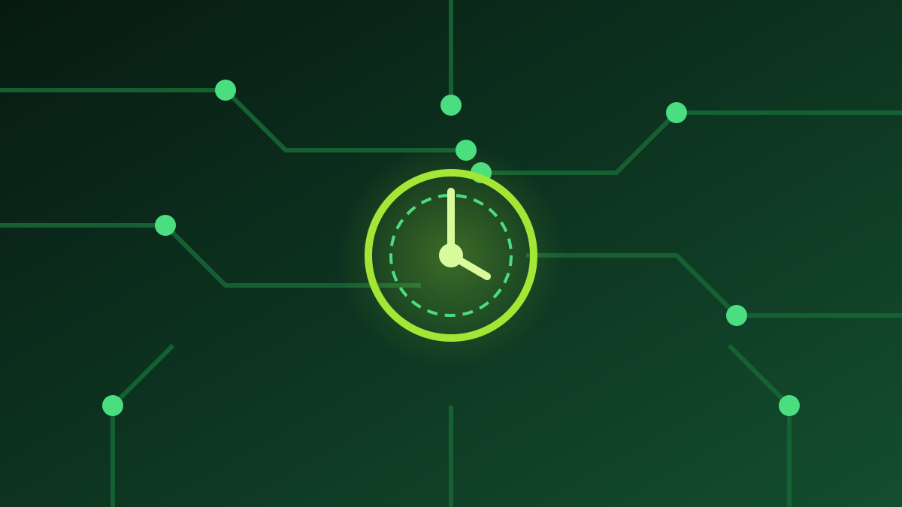

1 / 7

💻 TEKNOLOGI
Cas sebulan sekali? Kelewat. Ini jam yang tahan 90 hari.
Garmin rilis Enduro 4 — jam buat anak ultra run yang nggak mau ribet dicas. Geser buat intip speknya →
2 / 7
⌚
Baru rilis, harganya Rp16 jutaan
Garmin memperkenalkan Enduro 4 awal Oktober 2026 dan mulai menjualnya 9 Oktober — penerus Enduro 3 yang rilis 2024.
Bandrolnya 899 dolar AS, atau sekitar Rp16 juta. Nggak berubah dari generasi sebelumnya.
3 / 7
🔋
Rahasianya: layar hemat + tenaga surya
Dengan pengisian solar, jam ini diklaim tahan sampai 90 hari di mode smartwatch dan 320 jam buat tracking aktivitas.
Tanpa matahari pun, mode smartwatch-nya bertahan 36 hari. Jadi pas buat ultramaraton multi-hari.
4 / 7
⚡
Dalemannya juga upgrade
RAM-nya 50% lebih besar dari Enduro 3, penyimpanan naik 2x lipat jadi 64 GB — muat lebih banyak peta dan musik.
Navigasi petanya 30% lebih cepat, ada fitur Perspective View baru, plus dua mode baterai: Max Accuracy dan Max Battery.
5 / 7
🛡️
Bodi yang siap disiksa
Case 51 mm dengan bezel titanium, lensa Power Sapphire, strap nilon, LED flashlight, dan tahan air 10 ATM.
Fitur kesehatannya lengkap: ECG, SpO2, HRV, GPS multi-band, sampai mode pendaki. Layarnya MIP 1,4 inci — bukan OLED, demi irit baterai.
6 / 7
💬
Kata netizen
Fan Garmin di Facebook dan Threads rame berdebat: ada yang nyebut Enduro 4 "cuma copy-paste Enduro 3" dan protes harga €900 tanpa layar OLED.
Tapi kubu satunya bela: "layar MIP justru alasannya baterai bisa awet — OLED ya balik dicas tiap hari." (Suara netizen — bukan fakta.)
7 / 7
🤔
Efeknya ke lo apa?
Harganya setara HP flagship, jadi ini jelas bukan buat semua orang — targetnya atlet endurance, pendaki, dan ultrarunner.
Tapi trennya valid: jam pintar makin berlomba irit baterai. Kalau lo cuma butuh jam harian, smartwatch biasa masih jauh lebih masuk akal di kantong.